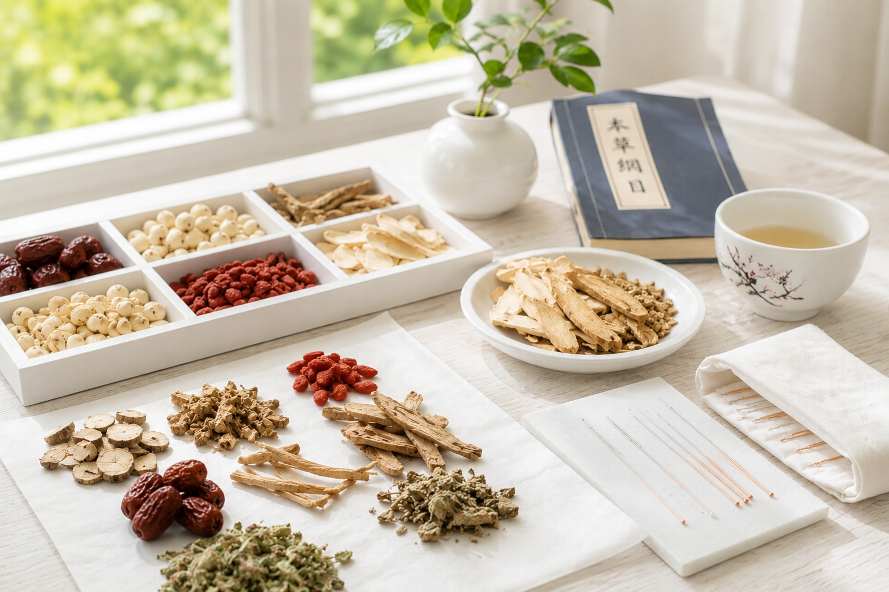

Bringing Traditional Chinese Medicine to You
Han Soo Kim, Registered TCM Practitioner, personally visits nursing homes, retirement villages, and private homes to provide personalised Traditional Chinese Medicine care for each patient.
Make an Enquiry
당신의 집으로
김한수 원장이 양로원, 실버타운, 그리고 자택을 직접 방문하여 한 분 한 분께 맞춤형 한의학 케어를 제공합니다. 여러 노인 커뮤니티에서 많은 환자와 가족들이 믿고 찾는 한의원입니다.
문의하기Home Visit Acupuncture & Chinese Medicine 방문진료 (침·한약 치료)
Professional Care in the Comfort of Your Home 집에서 편안하게 받는 전문 한의 진료
Many people find it difficult to travel to a clinic due to illness, pain, limited mobility, or a busy lifestyle. 질병이나 통증, 거동의 불편함 또는 바쁜 일정 때문에 한의원을 방문하기 어려운 분들이 많습니다.
At TCM Clinic The Present, we provide professional acupuncture and Chinese herbal medicine in the comfort and privacy of your own home, delivering personalised care without the stress of travelling. 선물한의원(TCM Clinic The Present)은 환자분의 집에서 편안하고 안전하게 전문적인 침 치료와 한약 처방을 제공하여, 이동에 대한 부담 없이 맞춤형 한의 진료를 받으실 수 있도록 도와드립니다.
Whether you are recovering from illness, undergoing cancer treatment, living with chronic pain, or simply prefer home-based healthcare, we are here to support your journey toward better health. 질병 회복 중이신 분, 암 치료를 받고 계신 분, 만성 통증으로 고생하시는 분, 또는 집에서 편안하게 진료받기를 원하시는 모든 분들의 건강 회복을 위해 함께하겠습니다.
Who Can Benefit from Home Visits? 방문진료가 필요한 분
Our home visit service is ideal for: 다음과 같은 분들에게 방문진료를 추천드립니다.
Elderly patients 고령 환자
- Limited mobility
- Arthritis
- Parkinson's disease
- Stroke recovery
- General weakness
- 거동이 불편하신 분
- 관절염
- 파킨슨병
- 뇌졸중 후 재활
- 전신 쇠약 및 기력 저하
Cancer patients 암 치료 중인 환자
- Chemotherapy support
- Radiation therapy support
- Fatigue
- Pain management
- Appetite support
- Sleep disturbances
- 항암치료 보조
- 방사선 치료 보조
- 극심한 피로감
- 암성 통증 관리
- 식욕 저하
- 수면 장애
Busy Professionals 바쁜 직장인
If your schedule makes it difficult to visit a clinic, we can provide treatment in your home at a convenient time. 시간적인 여유가 없어 한의원 방문이 어려운 경우, 원하시는 시간에 자택에서 편리하게 진료를 받으실 수 있습니다.
Areas We Service 방문 가능 지역
We currently provide home visit services throughout many areas of Sydney. Please contact us to confirm whether your suburb is within our service area. 현재 시드니의 여러 지역에서 방문진료를 제공하고 있습니다. 거주하시는 지역이 방문 가능 지역인지 확인하시려면 언제든지 문의해 주세요.
What Should I Prepare? 방문진료 전에 준비하실 것
Before your appointment, we recommend preparing: 진료 전 다음 사항을 준비해 주시면 더욱 원활한 진료가 가능합니다.
- A quiet room where you can relax
- Comfortable clothing
- A bed, couch, or massage table (if available)
- A list of your current medications
- Any recent medical reports or scans (if relevant)
- 편안히 쉬실 수 있는 조용한 공간
- 움직이기 편한 복장
- 침대, 소파 또는 마사지 베드(있는 경우)
- 현재 복용 중인 약 목록
- 최근 검사 결과나 영상자료(필요한 경우)
No special equipment is required. We bring all necessary acupuncture and treatment equipment with us. 별도의 의료 장비를 준비하실 필요는 없습니다. 침 치료에 필요한 모든 장비와 소모품은 저희가 직접 준비하여 방문합니다.
What Happens During a Home Visit? 방문진료는 어떻게 진행되나요?
1. Initial Consultation 1. 초기 상담
We begin by discussing your symptoms, medical history, lifestyle, and treatment goals. 현재의 증상과 병력, 생활습관, 치료 목표 등에 대해 자세히 상담합니다.
2. Traditional Chinese Medicine Assessment 2. 한의학적 진단
Your practitioner will assess your condition using Traditional Chinese Medicine diagnostic methods, including: 환자분의 상태를 다음과 같은 한의학적 진단 방법으로 평가합니다.
- Pulse assessment
- Tongue observation
- Symptom evaluation
- 맥진
- 설진(혀 진단)
- 증상 분석
3. Personalised Treatment 3. 맞춤형 치료
Depending on your individual needs, treatment may include: 환자분의 상태에 따라 다음과 같은 치료가 이루어집니다.
- Acupuncture
- Individualised Chinese herbal medicine
- Dietary advice
- Lifestyle recommendations
- 침 치료
- 맞춤 한약 처방
- 식이요법 상담
- 생활습관 개선 지도
4. Ongoing Care Plan 4. 지속적인 치료 계획
If further treatment is recommended, a personalised treatment plan will be developed to support your recovery. 추가적인 치료가 필요한 경우, 회복을 돕기 위한 개인 맞춤형 치료 계획을 함께 수립합니다.
Frequently Asked Questions 자주 묻는 질문 (FAQ)
Is home acupuncture safe? 방문 침 치료는 안전한가요?
Yes. All treatments are performed by an AHPRA-registered Chinese Medicine practitioner using single-use, sterile disposable needles. 네. 모든 치료는 AHPRA에 등록된 한의사가 시행하며, 일회용 멸균 침만을 사용하여 안전하게 치료합니다.
Do I need a treatment table? 마사지 베드가 꼭 필요한가요?
No. A bed, couch, or comfortable chair is usually sufficient. 아닙니다. 침대나 소파 또는 편안한 의자만 있어도 대부분의 치료가 가능합니다.
How long does a visit take? 진료 시간은 얼마나 걸리나요?
The first consultation usually takes around 60–75 minutes. Follow-up appointments generally take 45–60 minutes, depending on your condition. 초진: 약 60~75분. 재진: 상태에 따라 45~60분 정도 소요됩니다.
Can I receive herbal medicine during a home visit? 방문진료에서도 한약 처방을 받을 수 있나요?
Yes. If herbal medicine is appropriate for your condition, an individualised prescription can be provided. For patients undergoing chemotherapy or other specialist medical treatment, herbal prescriptions are carefully considered, and communication with your treating medical team is welcomed where appropriate. 네. 환자분의 상태에 적합하다고 판단되면 개인별 맞춤 한약을 처방해 드립니다. 특히 항암치료나 전문의의 치료를 함께 받고 계신 환자의 경우에는 안전성을 최우선으로 고려하며, 필요할 경우 담당 전문의와의 협력 및 소통을 통해 더욱 신중하게 처방을 진행합니다.
Do you treat aged care residents? 요양원이나 실버타운에서도 진료가 가능한가요?
Yes. We have experience providing acupuncture and Chinese Medicine services for residents in aged care facilities, retirement villages, and private homes. 네. 저희는 요양시설(Aged Care), 은퇴자 마을(Retirement Village), 개인 가정 등 다양한 환경에서 방문 한의진료를 제공한 경험이 있습니다.
How do I book a home visit? 방문진료는 어떻게 예약하나요?
Simply contact us by phone or send us a message. We will discuss your condition, location, and preferred appointment time before arranging your visit. 전화 또는 문자로 문의해 주시면 됩니다. 환자분의 증상과 거주 지역, 희망하시는 진료 시간을 상담한 후 방문 일정을 예약해 드립니다.
Our goal is not simply to treat symptoms, but to provide compassionate, professional care that helps patients regain comfort, independence, and a better quality of life — where they feel most at ease: in their own home.
저희의 목표는 단순히 증상만 치료하는 것이 아닙니다. 환자분이 가장 편안함을 느끼는 공간인 자신의 집에서, 전문적이고 따뜻한 한의 진료를 통해 통증을 줄이고, 건강을 회복하며, 일상의 독립성과 삶의 질을 향상시키는 것이 저희가 추구하는 진료의 가치입니다.
Ready to arrange a visit? Get in touch today. 방문 진료를 예약하시겠습니까? 지금 바로 연락 주세요.
Contact Us문의하기